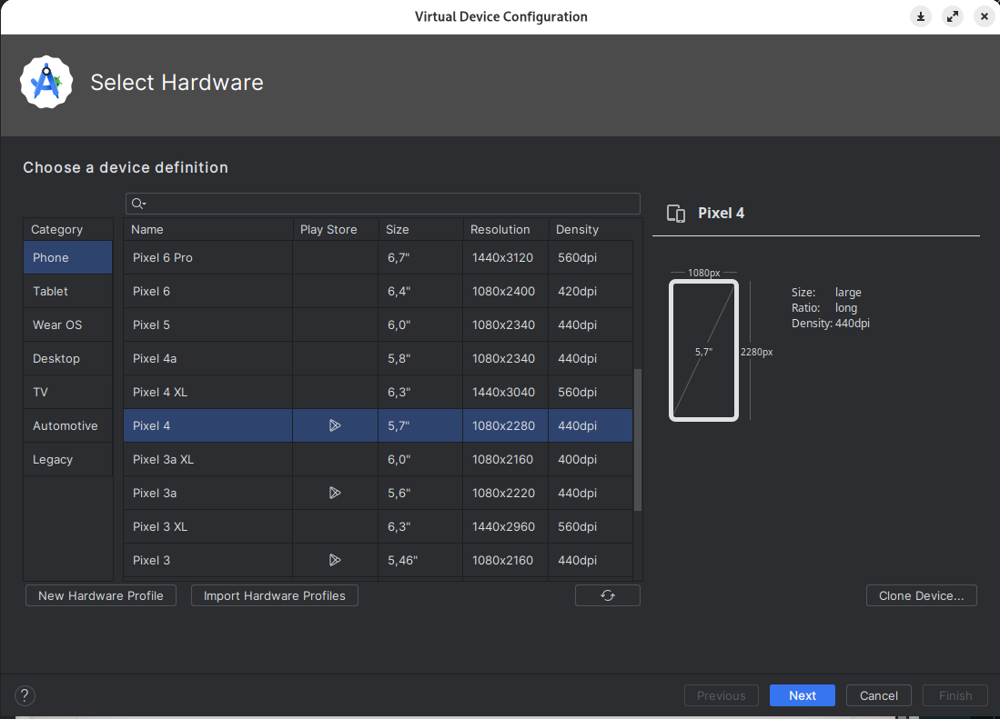
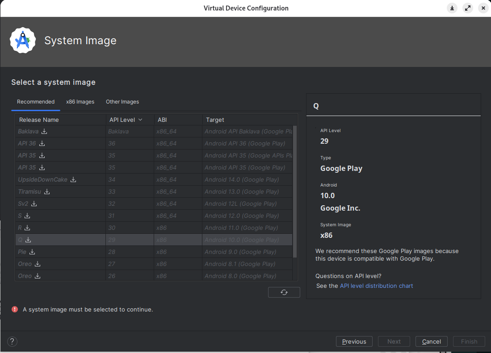
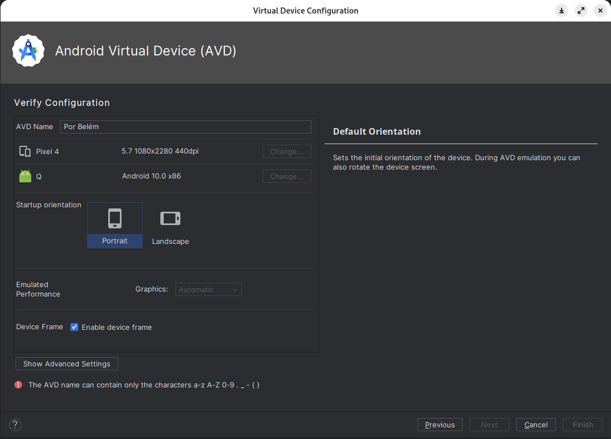
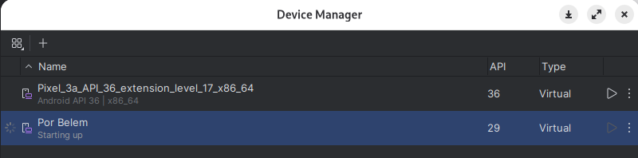

Disciplinas
-
DESENVOLVIMENTO PARA DISPOSITIVOS MÓVEIS Concluído
Materiais
Neste módulo, você aprendeu sobre o sistema operacional Android, suas principais características, bem como as ferramentas que deve utilizar para o desenvolvimento de aplicativos.
Quando se desenvolve software para dispositivos móveis, os programas não irão executar em computadores tradicionais, nem em seus principais sistemas operacionais (Windows, Linux, Mac OS). Dessa forma, o uso de emuladores acaba se tornando indispensável durante o processo de desenvolvimento, pois são programas que simulam o ambiente de um dispositivo ou sistema operacional diferente, e permitem que softwares criados para uma plataforma específica funcionem em outra.
O ambiente de desenvolvimento do Android Studio possui uma ferramenta muito eficiente para trabalhar com emuladores, o Gerenciador de Dispositivos Virtuais Android (Android Virtual Device Manager). Com essa ferramenta é possível criar diferentes emuladores de smartphones reais, que utilizam o sistema operacional Android.
Nesse fórum você deverá criar um AVD (Dispositivo Virtual Android) em seu computador.
Conteúdo
Para isso, realize as tarefas a seguir:
- Abra o Android Studio.
- Na tela de boas-vindas do Android Studio, selecione “...” (More Actions) e depois selecione “Virtual Device Manager”.
- No AVD Manager, clique em “+” (Create Virtual Device).
- Escolha a categoria de dispositivo que deseja emular - Phone.
- Escolha um perfil de hardware existente (modelo de smartphone), os perfis definem as características físicas do dispositivo, como tamanho da tela e resolução.
- Selecione uma imagem do sistema operacional - versão do Android 10 (API 29).
- Baixe a versão do sistema clicando no ícone de download ao lado do nome da versão.
- Dê um nome para o seu AVD. É possível definir opções adicionais para o AVD, porém mantenha as opções padrão.
- Revise suas configurações e clique em “Finish” para criar o AVD.
- Após criar o AVD, inicie-o clicando no botão “Start” ao lado do AVD na lista do AVD Manager.
Comente e discuta com os colegas no fórum sobre como foi o processo de criação do emulador em seu computador, bem como eventuais dificuldades encontradas. Compartilhe uma captura de tela (print screen) de seu emulador instalado e executando.
Resolução.
Dispositivo Virtual Android (AVD)- Abra o Android Studio.
- Na tela de boas-vindas do Android Studio, selecione “...” (More Actions) e depois selecione “Virtual Device Manager”.
- No AVD Manager, clique em “+” (Create Virtual Device).
- Escolha a categoria de dispositivo que deseja emular - Phone.
- Escolha um perfil de hardware existente (modelo de smartphone), os perfis definem as características físicas do dispositivo, como tamanho da tela e resolução.
- Selecione uma imagem do sistema operacional - versão do Android 10 (API 29).
- Baixe a versão do sistema clicando no ícone de download ao lado do nome da versão.
- Dê um nome para o seu AVD. É possível definir opções adicionais para o AVD, porém mantenha as opções padrão.
- Revise suas configurações e clique em “Finish” para criar o AVD.
- Após criar o AVD, inicie-o clicando no botão “Start” ao lado do AVD na lista do AVD Manager.
- Dificuldade na imagem do android pois uso Linux, problema para baixar
- performance do emulador, ficou um pouco lento.





Comente e discuta com os colegas no fórum sobre como foi o processo de criação do emulador em seu computador, bem como eventuais dificuldades encontradas. Compartilhe uma captura de tela (print screen) de seu emulador instalado e executando.